Series Temporales: Procesos Estocásticos
Máster de Bioestadística (Modelización Estadística)
Iván Arribas (Depto. Análisis Económico. Universitat de València)
1 Introducción
En este tema vamos a definir una serie de conceptos que permitirán entender mejor una serie temporal como una muestra de un proceso generador de datos (PGD). Veremos también herramientas para realizar una descriptiva de una la serie temporal (muestra) que permitirá estimar el PGD que hay detrás y así poder hacer predicciones (inferencia).
Como en el estudio de muestras transversales, la hipótesis de normalidad es conveniente, pero a esta hay que añadir las hipótesis de estacionariedad y ergodicidad.
En los temas siguientes haremos uso constante de los conceptos aquí definidos.
2 Proceso estocástico
2.1 Definición
Un proceso estocástico \(Y_t\) es (sin excesiva precisión) una variable aleatoria que corresponde a momentos sucesivos del tiempo.
Como toda variable aleatoria, su caracterización puede hacerse a través de su función de distribución o a partir de sus momentos.
- La caracterización de un proceso estocástico mediante los momentos de primer y segundo orden (medias y covarianzas) es más incompleta que cuando se hace mediante funciones de distribución.
- Bajo la hipótesis de normalidad el proceso estocástico queda completamente caracterizado a través de los dos primeros momentos.
Nosotros contamos con una sola realización del proceso estocástico \(Y_t\), la serie temporal observada \(\{y_t\}_{t=1}^T\).
- A partir de \(\{y_t\}_{t=1}^T\) estimaremos los momentos de primer y segundo orden (medias y covarianzas).
- Estos momentos nos permitirán identificar el PGD.
- Una vez identificado, estimaremos el PGD y podremos realizar inferencia (contrastes de hipótesis y predicciones).
Para que esta línea de razonamiento sea válida es necesario que el proceso sea estacionario y ergódico.
2.2 Proceso estacionario
Proceso estacionario en sentido estricto
Un proceso es estacionario en sentido estricto cuando la distribución conjunta no varía al realizar un desplazamiento en el tiempo de todas las variables.
- Si \(F(Y_{t_1},..., Y_{t_k})\) es la función de distribución conjunta y \(h>0\), entonces el proceso es estacionario en sentido estricto si \[F(Y_{t_1},..., Y_{t_k}) = F(Y_{t_1+h},..., Y_{t_k+h})\]
Intuitivamente, la distribución de un proceso estocástico es independiente del momento del tiempo.
Comprobar si un proceso es estacionario en sentido estricto es muy difícil, así que vamos a encontrar condiciones suficientes: estacionariedad en media y en sentido amplio (covarianza).
Proceso estacionario en media
Un proceso es estacionario en media (o de primer orden) si su nivel se mantiene en el tiempo: \[E[Y_t] = \mu \; \; \forall t\]
La figura 1 muestra en el panel superior la serie Libros que no es estacionaria en media, y en el panel inferior la diferencia de títulos publicados entre dos años consecutivos, que sí es estacionaria en media.
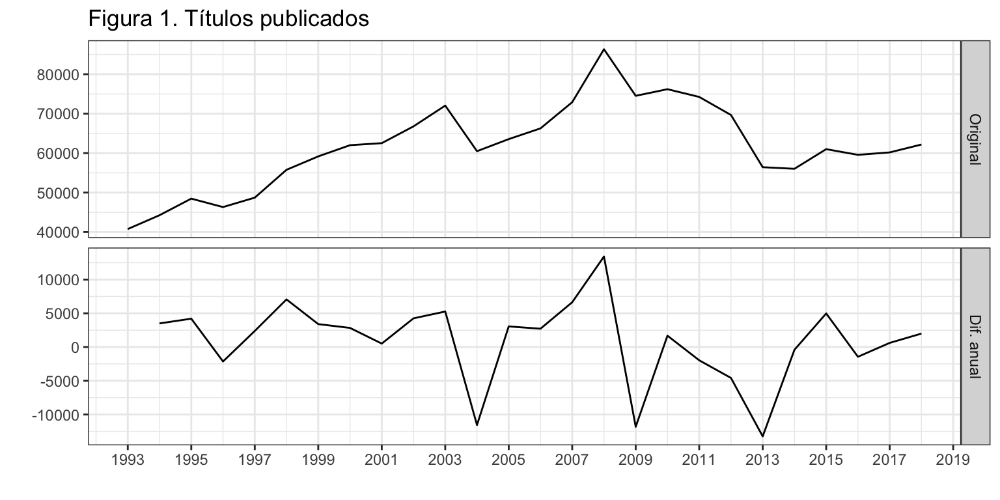
Proceso estacionario en sentido amplio
Un proceso (ya estacionario en media) es estacionario en sentido amplio, o de segundo orden, si sus momentos de orden dos no dependen del tiempo:
- La (auto)covarianza entre dos periodos de tiempo es finita y sólo depende del intervalo de tiempo transcurrido entre estos dos periodos: \[Cov[Y_t, Y_{t+k}] = E[(Y_t - \mu)(Y_{t+k} - \mu)] = \gamma_k,\,\,\,\forall t\]
Observa que la varianza será entonces \(Var[Y_t] = E[(Y_t - \mu)^2] = \gamma_0\).
La figura 2 muestra una serie que es estacionaria en media, pero no lo es en sentido amplio: al inicio de la serie hay una mayor variabilidad en los datos que en la zona intermedia.

Un proceso estacionario en sentido estricto también es estacionario en sentido amplio, pero lo contrario no es cierto. Ahora bien, bajo normalidad un proceso estacionario en sentido amplio también lo será en sentido estricto.
2.3 Proceso ergódico
En el tema siguiente se verá que la estimación de los momentos de primer y segundo orden de la serie temporal permite identificar y estimar el PGD.
Para que la estimación de los momentos sea consistente el proceso debe ser ergódico: \[\lim_{T\rightarrow \infty} Var(\frac{1}{T}\sum_{t=1}^T Y_t)=0. \]
Para que un proceso sea ergódico las observaciones nuevas tienen que aportar suficiente información para que la varianza del valor medio converja a 0. Esto no ocurre si la dependencia entre las variables es muy fuerte.
Una condición necesaria pero no suficiente para que un proceso estacionario sea ergódico es: \[\lim_{k\rightarrow \infty} \gamma_k = 0.\] Es decir, que el pasado cada vez ayuda menos a entender el presente.
2.4 Resumen
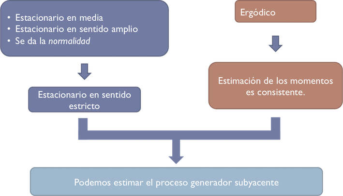
3 Transformaciones de una serie
3.1 Ideas generales
Una serie temporal \(\{y_t\}_{t=1}^T\) no tiene porque verificar las condiciones de estacionariedad, ergodicidad y normalidad.
A continuación, veremos una serie de transformaciones que convierten una serie no estacionaria en estacionaria; no ergódica en ergódica; y, de paso, facilitan la verificación de la hipótesis de normalidad, que dejaremos para más adelante.
En el panel superior de la figura 3 tienes la serie de nacimientos, que denominaremos \(y_t\), y en panel inferior tienes la diferencia de la transformación logarítmica de la serie, \(log(y_t) - log(y_{t-1})\). La serie nacimientos no es estacionaria en media ni en varianza, pero la transformación logarítmica y la diferencia han logrado que sea estacionaria en ambos sentidos.
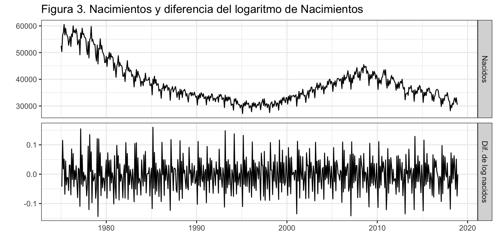
3.2 Diferenciación
La diferenciación permite transformar una serie no estacionaria en media en estacionaria en media.
Diferenciar de orden \(k\) consiste en restar a la observación de un periodo la de \(k\) periodos antes: \[\nabla_k y_t = y_t - y_{t-k}.\]
Diferenciación regular (\(k=1\))
Un caso concreto de la diferenciación es la diferenciación regular o diferenciación de orden uno, que consiste en restar a la observación de un periodo la del periodo precedente: \[\nabla y_t = y_t - y_{t-1}.\] Usualmente, la serie diferenciada \(\nabla y_t\) ya es estacionaria en media. Por ejemplo, en la figura 1 teníamos la serie Libros (panel superior) no estacionaria, y la serie Libros diferenciada regularmente que es estacionaria.
En algunos casos la serie diferenciada puede continuar presentando tendencia. En ese caso habrá que seguir diferenciando hasta obtener la estacionariedad en media.
Si \(\nabla y_t\) no es estacionaria, se diferencia (regularmente) una segunda vez para obtener una doble diferenciación de primer orden: \[\nabla^{2} y_t = \nabla(\nabla y_t) = \nabla y_t - \nabla y_{t-1} = (y_t - y_{t-1}) - (y_{t-1} - y_{t-2}) = y_t - 2y_{t-1} + y_{t-2}\] En la práctica una sola diferenciación suele ser suficiente para obtener la estacionariedad en media; diferenciar dos veces es excepcional; y diferenciar tres o más veces no se da.
Diferenciación estacional (\(k=m\))
Existe la diferencia estacional, que consiste en restar a la observación de un periodo la observación precedente de la misma estación. Si el orden estacional es \(m\), entonces la diferencia estacional de \(y_t\) es \[\nabla_m y_t = y_t - y_{t-m}.\] Una serie no estacionaria en media puede pasar a serlo tras diferenciarla estacionalmente. Es decir, cualquiera de las dos diferenciaciones (regular o estacional) o ambas a la vez son alternativas para obtener la estacionariedad en media.
Además, la diferenciación (regular, estacional o ambas) también permite alcanzar la ergodicidad.
La figura 4 muestra un ejemplo de diferenciación regular y/o estacional. En el primer panel aparece la serie original Nacimientos \(y_t\); el segundo panel muestra la serie diferenciada regularmente \(\nabla y_t\); el tercer panel la serie diferenciada estacionalmente \(\nabla_m y_t\); el cuarto panel muestra la serie diferenciada regular y estacionalmente \(\nabla\nabla_m y_t\).
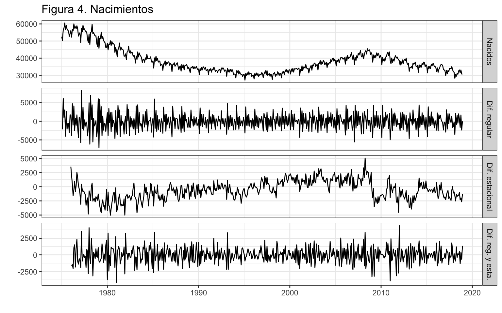
¿Qué transformación para nacimientos consideras que genera una serie estacionaria, tanto en media como en varianza? Siempre hay un cierto grado de subjetividad en la elección de las diferencias que hay que aplicar a una serie. En la figura 4 podemos considerar que la diferenciación regular (panel 2) es suficiente para lograr la estacionariedad en media y en varianza y terminar el proceso de diferenciación. Pero también podemos considerar que la serie es estacionaria en media pero no lo suficiente en varianza, y optar por la doble diferenciación, regular y estacional (panel 4). Existen contrastes para ayudarnos en esta decisión (véase epígrafe 5), pero la conclusión puede depender el tipo de contraste elegido o de ciertos parámetros técnicos usados en los contrastes. Muchas veces la decisión final se realiza durante el proceso de modelización o simplemente se opta por la que mejores predicciones genere.
Diferenciación con R
R dispone de la función diff para diferenciar una serie:
diff(x)calcula la diferencia regular o de orden \(1\), \(\nabla y_t\)diff(x, lag = k)calcula la diferencia de orden \(k\), \(\nabla_k y_t\)diff(x, lag = k, difference = d)calcula \(d\) diferencias de orden \(k\), \(\nabla_k^d y_t\)
Si necesitas calcular una diferencia regular y otra estacional, \(\nabla\nabla_m y_t\), debes usar diff(diff(x, lag = m)). El orden de las diferenciaciones no cambia el resultado.
3.3 Transformación de Box-Cox
En el tema 2 vimos el argumento lambda, que fijado a 0 indicaba que había que transformar la serie logarítmicamente. Veamos en detalle que hay detrás de este argumento.
Transformación logarítmica
Si la serie original no es estacionaria en varianza porque los datos crecen con el nivel de la serie, es posible obtener la estacionariedad por medio de transformaciones simples.
La transformación logarítmica de una serie es una alternativa. La figura 5 muestra la serie Nacimientos y su logaritmo. La variabilidad estacional con la transformación logarítmica (panel segundo) es menor que en la serie original (panel superior).
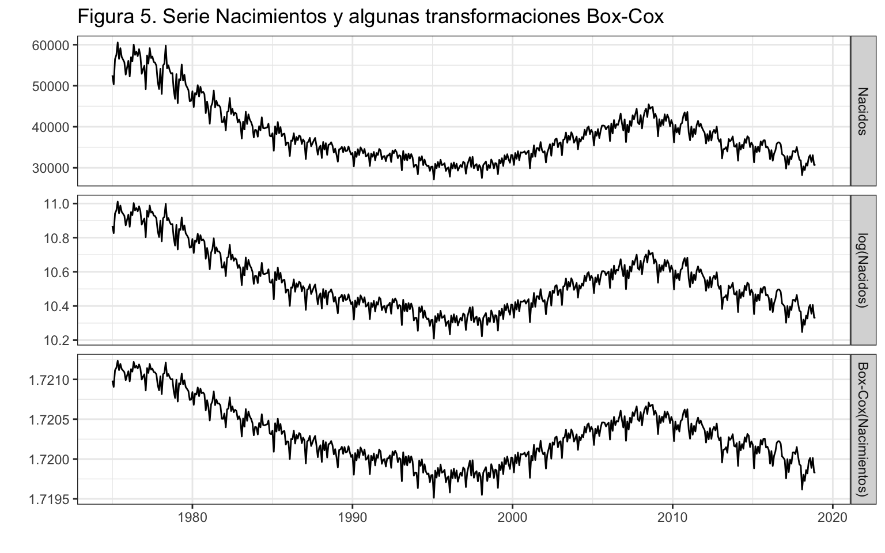
Box-Cox
La transformación logarítmica es un caso concreto de otra más general, la transformación de Box-Cox: \[ z_t = \begin{cases} (y_t^{\lambda}-1)/\lambda & \,\,\,\lambda \neq 0 \\ \log(y_t) & \,\,\, \lambda = 0 \end{cases} \]
Se puede demostrar que \(\lim_{\lambda \rightarrow 0} \;\; (y_t^{\lambda}-1)/\lambda = log(y_t)\).
En la figura 5, el panel inferior muestra la transformación óptima de Box-Cox para Nacimientos, la que hace que la serie sea lo más estacionaria en varianza posible. El valor usado es \(\lambda= -0.58\).
Ahora bien, por un lado no hay grandes diferencias (al menos visuales) entre el resultado de la transformación logarítmica y el resultado de la transformación de Box-Cox con \(\lambda= -0.58\). Por otro lado, ¿qué interpretación tiene \(-(nacimientos_t^{-0.58}-1)/0.58\)? En general, y con independencia del resultado de la transformación óptima, se opta por la transformación logarítmica por ser más sencilla y sobre todo más interpretable.
Por último, ten presente que si se estima y predice una serie transformada, luego hay que deshacer la transformación para obtener la predicción de la serie original.
El argumento lambda que hemos usado en algunas funciones de la librería forecast hace referencia al parámetro \(\lambda\) de la transformación Box-Cox. Siempre lo hemos fijado a cero, indicando la transformación logarítmica.
3.4 Diferencia, Logaritmo y Tasa de variación
La transformación \(\nabla y_t\) se puede interpretar como variaciones en nivel, pero \(\nabla^2 y_t\) no tiene ninguna interpretación. Nunca hay que perder de vista la realidad de las observaciones.
Cuando una serie tiene que ser diferenciada dos veces para conseguir su estacionariedad, vale la pena probar una transformación alternativa que sea interpretable: \(\nabla \log(y_t)\) o \(\nabla_m \log(y_t)\). Por un lado, \[\nabla \log(y_t) = \log(y_t) - \log(y_{t-1}) = \log\big(\frac{y_t}{y_{t-1}} \big) \approx \frac{y_t}{y_{t-1}} - 1 = \frac{y_t - y_{t-1}}{y_{t-1}} =TV y_t.\]
Por ejemplo, para una serie mensual la diferencia regular del logaritmo (natural) es la Tasa de Variación Mensual de la serie \((\nabla \log(y_t)=TVM y_t)\), que tiene una clara interpretación como variación porcentual.
Por otro lado, \[\nabla_m \log(y_t) \approx \frac{y_t - y_{t-m}}{y_{t-m}} =TV_m y_t.\]
Es decir, para una serie mensual la diferencia estacional del logaritmo es la Tasa de Variación Anual de la serie \((\nabla_{12} \log(y_t)=TVA y_t)\).
La figura 6 muestra para la serie Nacimientos la serie original (panel superior), las tasas de variación mensual y anual (paneles dos y tres, respectivamente) y la doble diferencia regular y estacional del logaritmo de nacimientos (panel inferior). Parece que la tasa de variación mensual de los nacimientos y la doble diferencia son, de todas las transformaciones probadas en este epígrafe, las series más estacionarias en media y varianza.
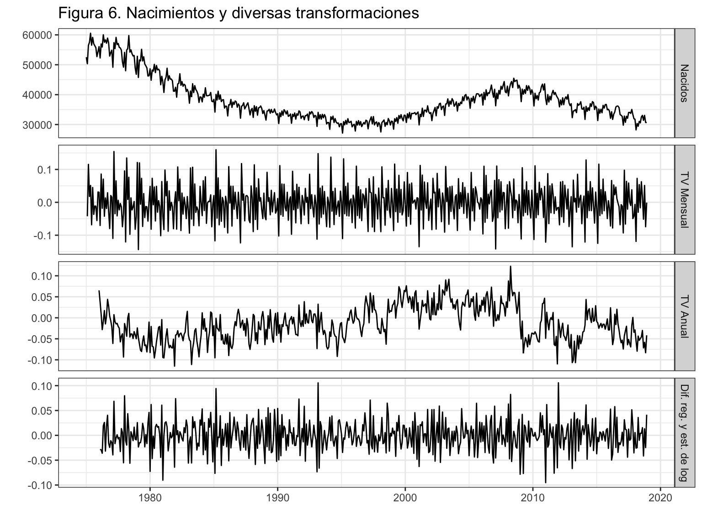
Transformación de Box-Cox con R
R dispone de una serie de funciones en el paquete forecast que nos facilitan el uso de la transformación de Box-Cox:
BoxCox(y, lambda)realiza la transformación Box-Cox para un valor de \(\lambda\) determinado.InvBoxCox(z, lambda)realiza la transformación inversaBoxCox.lambda(y)calcula el valor de \(\lambda\) más adecuado. Usahelppara saber más sobre los métodos de estimación de \(\lambda\).
Para la serie Nacimientos el valor óptimo de \(\lambda\) es:
BoxCox.lambda(nacimientos) [1] -0.5807097Recuerda que en la figura 5 puedes ver la serie original, la transformación logarítmica y la transformación Box-Cox para el valor de \(\lambda\) óptimo.
4 Funciones de autocorrelación y autocorrelación parcial
4.1 Función de autocorrelación
Ya hemos indicado que bajo ciertas hipótesis los momentos primero y segundo de la serie caracterizan perfectamente el proceso estocástico. En el contexto de series temporales, si se da la estacionariedad en media, el primer momento de la serie es constante y, por tanto, no informativo. Son los segundos momentos de la serie (covarianzas) los que caracterizan el proceso estocástico.
Recordemos que \(\gamma_k=Cov(y_t,y_{t-k})\) es la autocovarianza de orden k. Por tanto \(\gamma_0\) es la varianza de la serie \(y_t\). Sea \(\rho_k\) la autocorrelación se orden \(k\). Se puede verificar que: \[\rho_k = cor(y_t, y_{t-k}) =\frac{\gamma_k}{\gamma_0}.\]
- \(\rho_1\) mide la información que se transmite de un periodo al siguiente periodo.
- \(\rho_k\) mide la información que se transmite k periodos hacia adelante.
Las autocorrelaciones caracterizan el proceso estocástico, y la función de autocorrelación o correlograma (FAC, o ACF en inglés) es el gráfico de \(r_k\) contra \(k\), donde \(r_k\) es la estimación de \(\rho_k\) obtenida con las observaciones.
En la figura 7 veamos la FAC para Libros (panel superior) y su diferencia (panel inferior) usando la función ggAcf, donde el argumento lag indica el máximo orden \(k\) a visualizar. Existe la función equivalente acf en la librería stats. El decrecimiento lineal de las autocorrelaciones para la serie Libros es un indicio de que la serie tiene tendencia y debería ser diferenciada. Observa que las autocorrelaciones de la primera diferencia de Libros entran en el intervalo de confianza al 95% (bandas azules) desde la primer momento.
ggAcf(libros, lag = 10)
ggAcf(diff(libros), lag = 10)
Si queremos ver los valores numéricos de las autocorrelaciones debemos añadir a la función ggAfc el argumento plot = FALSE. Vemos que existe una relación (casi) nula entre la variación anual de Libros de dos años consecutivos (\(r_1=\)-0.038). Para una serie anual este es un claro indicativo de que la serie diferenciada es ruido blanco.
ggAcf(diff(libros), lag = 10, plot = FALSE)
Autocorrelations of series 'diff(libros)', by lag
0 1 2 3 4 5 6 7 8 9 10
1.000 -0.038 -0.073 0.037 -0.033 0.057 -0.300 0.035 0.162 0.140 -0.024 La figura 8 muestra la FAC para la serie Nacimientos y algunas de sus transformaciones. Observa el diferente uso del argumento lag: en la función diff indica el orden de la diferenciación, y en la función ggAcf indica el orden máximo de la autocorrelación. La primera columna muestra la FAC para Nacimientos y varias diferenciaciones, mientras que la segunda columna muestra la FAC para el logaritmo de los nacimientos y sus diferenciaciones. Se puede observar que la FAC de una serie y su transformación logarítmica es muy similar. En los paneles de la primera y tercera fila las autocorrelaciones decrecen muy lentamente, indicando que la serie analizada no es estacionaria ni ergódica. En los paneles de la segunda fila las autocorrelaciones de orden estacional (12, 24,…) también decrecen lentamente, indicando que la serie analizada no es ergódica. Solo la doble diferenciación regular y estacional de la serie (original o su logaritmo) muestran un rápido descenso en los coeficiente de autocorrelación (paneles de la última fila), indicando que la serie transformada es estacionaria en media y ergódica.
ggAcf(nacimientos, lag = 48)
ggAcf(log(nacimientos), lag = 48)
ggAcf(diff(nacimientos), lag = 48)
ggAcf(diff(log(nacimientos)), lag = 48)
ggAcf(diff(nacimientos, lag = 12),lag = 48)
ggAcf(diff(log(nacimientos), lag = 12), lag = 48)
ggAcf(diff(diff(nacimientos, lag=12)), lag = 48)
ggAcf(diff(diff(log(nacimientos), lag=12)), lag = 48)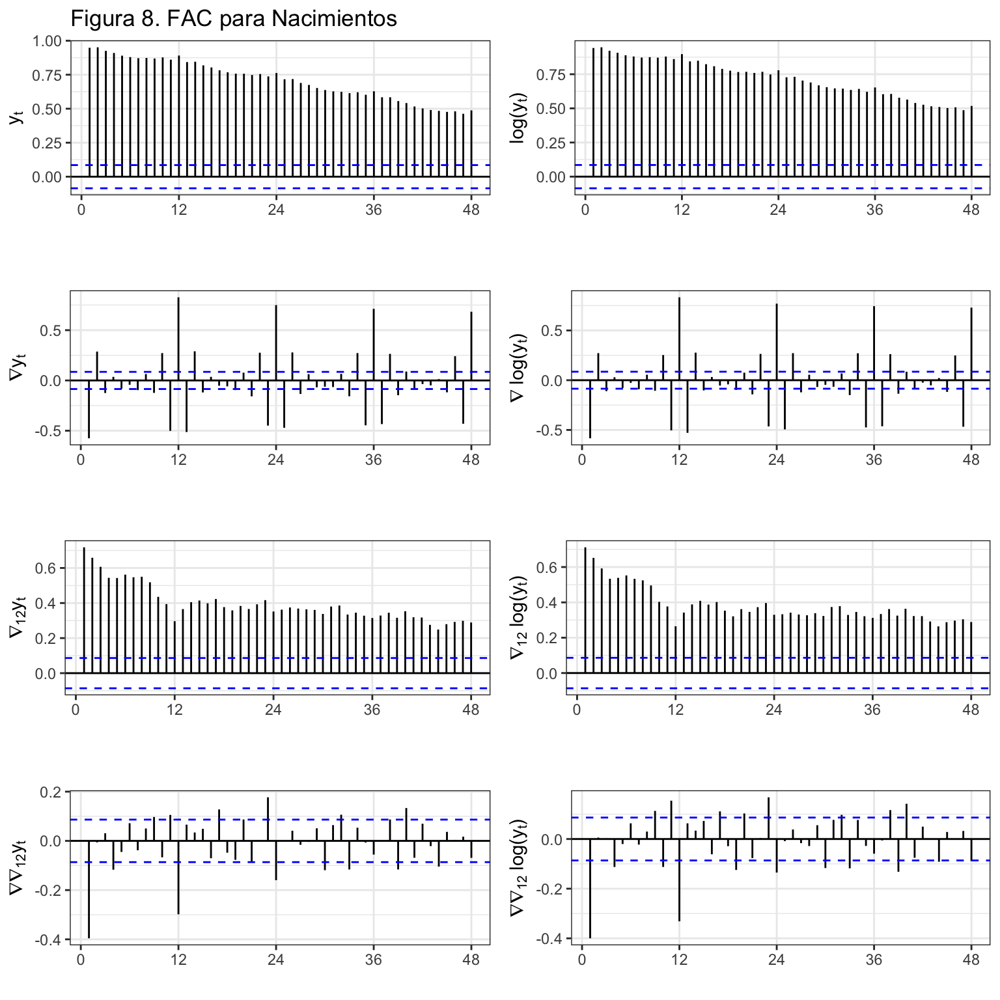
También es posible ver los valores numéricos exactos:
ggAcf(diff(diff(nacimientos, lag=12)), lag = 24, plot = FALSE)
Autocorrelations of series 'diff(diff(nacimientos, lag = 12))', by lag
0 1 2 3 4 5 6 7 8 9 10
1.000 -0.396 -0.006 0.031 -0.117 -0.045 0.072 -0.038 0.050 0.097 -0.067
11 12 13 14 15 16 17 18 19 20 21
0.105 -0.298 0.066 0.034 0.049 -0.070 0.128 -0.048 -0.077 0.087 -0.085
22 23 24
0.002 0.177 -0.160 Las bandas azules de la FAC muestran el intervalo de confianza al 95% (IC95). Si \(\rho_k = 0\), la distribución del estimador \(r_k\) se distribuye aproximadamente como una normal de media \(-1/T\) y varianza \(1/T\). Las líneas punteadas de la FAC están dibujadas en las posiciones \(\frac{-1}{T} \pm \frac{1.96}{\sqrt{T}}\).
Si un \(r_k\) cae fuera del IC95 hay evidencia para rechazar la hipótesis nula de que \(\rho_k = 0\) a un nivel del 5%. Recordemos que incluso si todos los \(\rho_k\) son cero, cabe esperar que un 5% de sus estimaciones \(r_k\) caigan fuera del IC95.
Los \(\rho_k\) no son independientes. Si uno cae fuera del IC95, es más probable que los valores vecinos caigan también fuera.
4.2 Función de autocorrelación parcial
La autocorrelación parcial de orden k, \(\phi_k\), mide la información que se transmite directamente \(k\) periodos adelante, eliminada la información que se transmite a través de los periodos intermedios.
- \(\phi_1\) mide la información que de un periodo se trasmite directamente al siguiente periodo. Por tanto \(\phi_1=\rho_1\).
- \(\phi_2\) mide la información que de un periodo se trasmite 2 periodos adelante, eliminando la información que se trasmite a través del periodo intermedio.
La función de autocorrelación parcial (FACP, o PACF en inglés) es el gráfico de \(r_{k.1,2,k-1}\) contra \(k\), donde \(r_{k.1,2,k-1}\) es la estimación de \(\phi_k\) realizada con las observaciones.
Las figura 9 y 10 muestran la FACP para las series Libros y Nacimientos así como para sus transformaciones para que sean estacionarias. La FACP no permite conocer si una serie es estacionaria o ergódica.
ggPacf(libros, lag = 10)
ggPacf(diff(libros), lag = 10)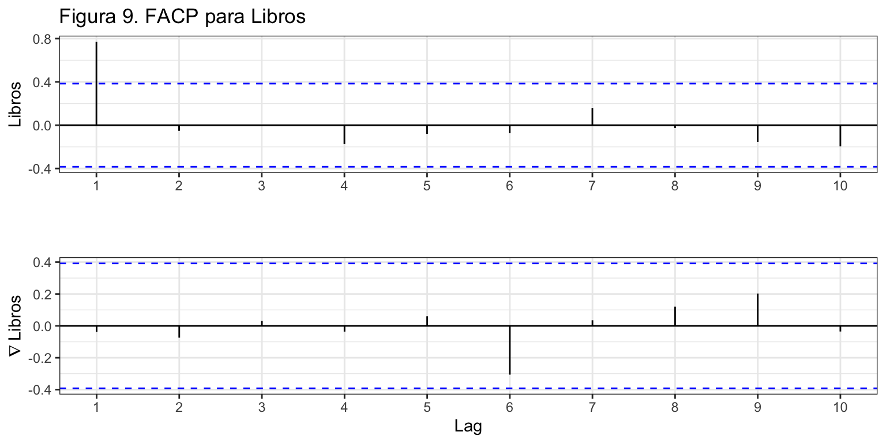
ggPacf(nacimientos, lag = 48)
ggPacf(diff(diff(nacimientos, lag=12)), lag = 48)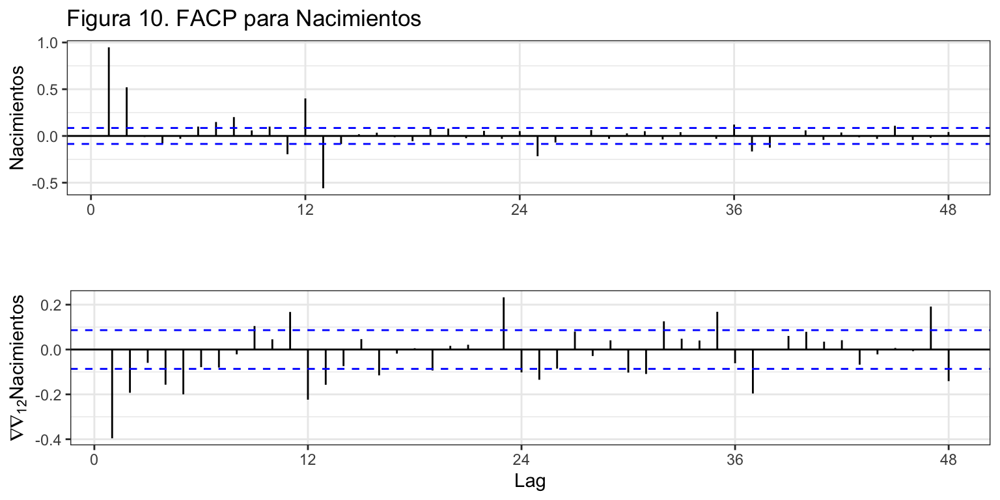
También puedes obtener directamente los valores numéricos de la FACP:
ggPacf(diff(libros), lag = 10, plot = FALSE)
Partial autocorrelations of series 'diff(libros)', by lag
1 2 3 4 5 6 7 8 9 10
-0.038 -0.074 0.031 -0.036 0.060 -0.306 0.035 0.120 0.203 -0.035 Las funciones tsdisplay y ggtsdisplay muestran la serie temporal, su FAC y su FACP en un único gráfico (véase figura 11).
ggtsdisplay(diff(libros), main = "Figura 11. FAC y FACP para la Libros diferenciada")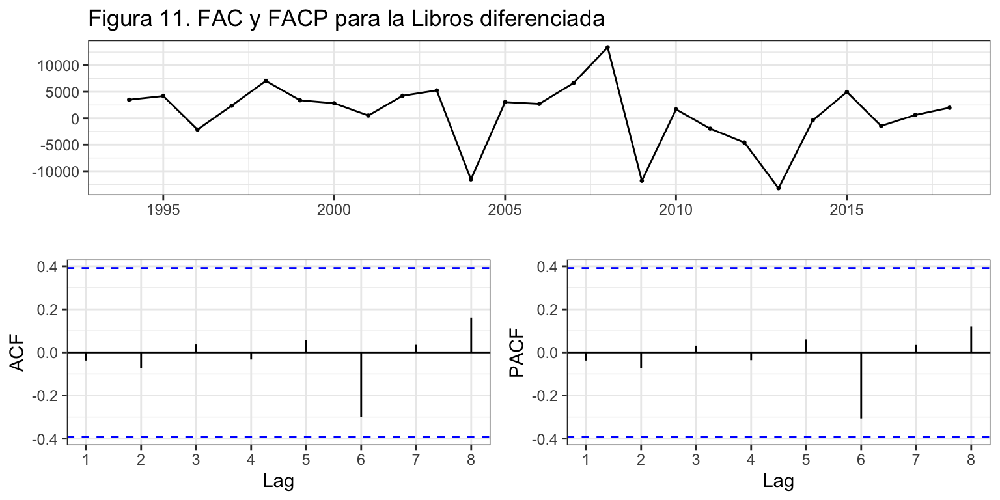
5 Raíces unitarias
5.1 Tipos de tendencia
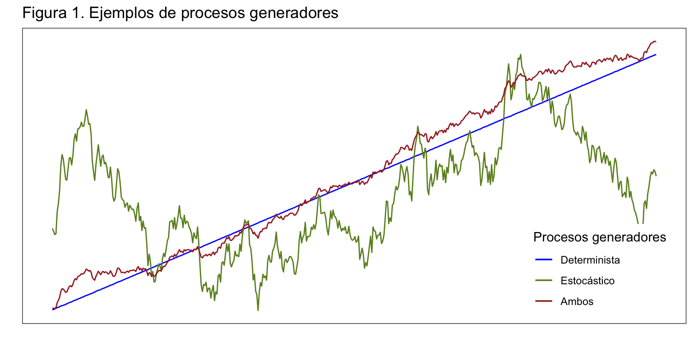
La figura 12 muestra tres posibles tipos de PGD (el residuo \(\varepsilon_t\) es siempre ruido blanco):
- PGD con tendencia estocástica, por ejemplo Paseo aleatorio puro, \[y_t = y_{t-1} + \varepsilon_t = y_0 + \sum_{s=1}^t \varepsilon_s.\]
- PGD con tendencia determinista, por ejemplo Modelo lineal \[y_t = \alpha + \mu t + \varepsilon_t.\]
- PGD con tendencia estocástica y determinista, por ejemplo Paseo aleatorio con deriva \[y_t = \mu + y_{t-1} + \varepsilon_t = y_0 + \mu t + \sum_{s=1}^t \varepsilon_s.\]
En los tres casos la serie no es estacionaria, pero es la presencia de tendencia estocástica lo que determina que el proceso tenga una raíz unitaria. Así, el paseo aleatorio puro y el paseo aleatorio con deriva presentan una raíz unitaria, pero los tres modelos tienen tendencia y deben ser diferenciados una vez para transformarlos en procesos estacionarios.
Contrastar la tendencia estocástica no es algo trivial, y la prueba es que existen múltiples contrastes para ello: Dickey-Fuller aumentado (ADF), Phillips-Perron (PP), Elliot-Rothemberg-Stock (ERS), Schmidt-Phillips (SP), Kwiatkowski-Phillips-Schmidt-Shin (KPSS), entre otros. (Véase Analysis of Integrated and Cointegrated Time series with R)
En muchas de las pruebas la hipótesis nula es que la serie tiene raíces unitarias (tendencia estocástica), cuando lo habitual es que la hipótesis nula sea la conservadora (en este caso que la serie no tenga tendencia estocástica). En este curso veremos la prueba de Kwiatkowski-Phillips-Schmidt-Shin que usa un contraste de Multiplicadores de Lagrange para contrastar la estacionariedad de una serie en torno a una tendencia determinista, frente a la hipótesis alternativa de existencia de una raíz unitaria. Es decir, la prueba KPSS tiene como hipótesis nula que la serie no tiene tendencia estocástica y por tanto es una prueba más conservadora que la mayoría de ellas. Sin embargo, en la prueba KPSS la ausencia de raíz unitaria no es una prueba de estacionariedad, sino de estacionariedad en torno a una tendencia determinista. Por ejemplo, el Modelo lineal no tiene una raíz unitaria (no tiene tendencia estocástica) pero no es estacionario.
También existen procesos con estacionalidad estocástica del tipo \(y_t = y_{t-m} + \varepsilon_t\), donde m es el orden estacional. Contrastar la existencia de raíces unitarias estacionales es complicado y no lo veremos en este curso. (Véase Testing for unit roots in seasonal time series: Some theoretical extensions and a Monte Carlo investigation)
En lo que queda de exposición asumiremos que la serie no presenta estacionalidad.
5.2 Contraste de raíz unitaria KPSS
Teoría
Sea \(y_t\) la serie para la que queremos contrastar la existencia de raíces unitarias. Asumimos que podemos descomponer la serie en la suma de una tendencia determinista, un paseo aleatorio y una perturbación aleatoria estacionaria: \[y_t = \xi t + r_t + \varepsilon_t.\] Aquí \(r_t\) es el paseo aleatorio, \[r_t = r_{t-1} + u_t,\] donde \(u_t\) son i.i.d. \((0,\sigma_u^2)\) y el valor inicial \(r_0\) se asume fijo y tiene el papel de un intercepto o constante del modelo.
Si se cumple la hipótesis \(H_0: \sigma_u^2=0\), entonces \(u_t=0\) y \(r_t=r_0\) para todo \(t\) y la componente estocástica desaparece, quedando solo la tendencia determinista. Como el parámetro de interés es una varianza, \(H_1: \sigma_u^2>0\), es decir, es un contraste de una cola por la derecha.
- Si \(\xi=0\), entonces bajo la hipótesis nula \(y_t = r_0 + \varepsilon_t\), es decir \(y_t\) no tiene tendencia estocástica ni determinista: es estacionaria en nivel alrededor de \(r_0\) (recuerda que por hipótesis \(\varepsilon_t\) es estacionario).
- Si \(\xi \neq 0\), entonces bajo la hipótesis nula \(y_t = \xi t + r_0 + \varepsilon_t\), es decir \(y_t\) no tiene tendencia estocástica pero si determinista: es estacionaria alrededor de una tendencia determinista \(\xi t + r_0\).
- En ambos casos, si se rechaza la hipótesis nula es porque la serie tiene una raíz unitaria (tendencia estocástica) y habría que diferenciarla.
No hay que olvidar que esta prueba descansa bajo los supuestos de \(\varepsilon_t\) es estacionario y \(u_t\) i.i.d. \((0,\sigma_u^2)\).
Procedimiento de contraste
Paso 1: Se estima la ecuación \(y_t = \xi t + r_0 + \varepsilon_t\) para obtener los residuos estimados \(\widehat{\varepsilon}_t\).
Observa que este vector de residuos se puede estimar fijando \(\xi = 0\), es decir, regresando la serie \(y_t\) simplemente sobre una constante; o bajo es supuesto de que \(\xi \neq 0\), es decir, regresando la serie sobre una contante y una tendencia lineal.
Paso 2: Se definen las sumas parciales \(S_t = \sum_{i=1}^t \widehat{\varepsilon}_i\), con \(t=1,2,\ldots,T\) y se calcula \(\widehat{\sigma}^2_{\varepsilon}\).
La forma más sencilla de calcular \(\widehat{\sigma}^2_{\varepsilon}\) es \(\widehat{\sigma}^2_{\varepsilon}= \sum \widehat{\varepsilon}_t^2/T\), pero una fórmula alternativa es \(\widehat{\sigma}^2_{\varepsilon}(l) = T^{-1}\sum_{t = 1}^T \widehat{\varepsilon}_t^2 + 2T^{-1}\sum_{s=1}^l \Big[ \Big( 1 - \frac{s}{l+1} \Big) \sum_{t=s+1}^T \widehat{\varepsilon}_t \widehat{\varepsilon}_{t-s} \Big]\), que dependen el parámetro \(l\).
Paso 3: El estadístico de contraste es \(LM = \sum_{t=1}^T S_t^2/\widehat{\sigma}^2_{\varepsilon}\).
Paso 4: Fijado un nivel de significatividad, el estadístico de contraste LM es comparado con el valor crítico. Si LM es mayor que el valor crítico, se rechaza la hipótesis nula, la serie tiene raíces unitarias (tendencia estocástica) y es, por tanto, no estacionaria. Si no se rechaza la hipótesis nula, entonces la serie es estacionaria en torno a un nivel (caso \(\xi = 0\)) o a una tendencia determinista (caso \(\xi \neq 0\)).
Puedes encontrar los detalles de este contraste en Kwiatkowski, D., Phillips, P.C.B., Schmidt, P. and Shin, Y., (1992).
Contraste KPSS en R
R proporciona dos implementaciones de esta prueba, ur.kpss en el paquete urca (que será la que usaremos) y kpss.test en el paquete tseries. En ambos casos el usuario debe decidir el valor adecuado del parámetro \(l\) para el cálculo de \(\widehat{\sigma}^2_{\varepsilon}(l)\). Como los resultados pueden depender de este parámetro, es conveniente repetir el contraste para diferentes valores.
Además, en forecast está disponible la función ndiffs que estima el número de diferencias necesarias para que una serie sea estacionaria. Por defecto la función ndiffs emplea el contraste KPSS, pero también están disponibles Dickey-Fuller y Phillips-Perron.
Los principales argumentos de la función ur.kpss son:
type, puede sertype = "mu"para contrastar la presencia de tendencia estocástica en torno a un nivel (\(\xi = 0\)); otype = "tau"para contrastar la presencia de tendencia estocástica en torno a una tendencia determinista (\(\xi \neq 0\)).lags, el valor del parámetro \(l\) en \(\widehat{\sigma}^2_{\varepsilon}(l)\). Puede ser ‘’nil’’ cuando no hay corrección (\(l=0\)); ‘’short’’ usa el valor \((4T/100)^{0.25}\); y ‘’long’’ para \((12T/100)^{0.25}\).use.lagfija un valor numérico para \(l\). (La funciónndiffsfija este valor a \(3\sqrt{T/13}\).)
Ejemplo con Libros
summary(ur.kpss(libros, type='tau', lags = 'short'))
#######################
# KPSS Unit Root Test #
#######################
Test is of type: tau with 2 lags.
Value of test-statistic is: 0.206
Critical value for a significance level of:
10pct 5pct 2.5pct 1pct
critical values 0.119 0.146 0.176 0.216En el caso en que se asume tendencia determinista, y para \(l=2\), el estadístico de contraste vale 0.206 y el valor crítico al 5% vale 0.146. Como el estadístico de contraste es mayor que el valor crítico, se rechaza la hipótesis nula, la serie tiene una raíz unitaria, es decir tiene tendencia estocástica alrededor de una tendencia determinista (como en el paseo aleatorio con deriva). Observa que al 1% no se rechaza la hipótesis nula.
summary(ur.kpss(libros, type='mu', lags = 'short'))
#######################
# KPSS Unit Root Test #
#######################
Test is of type: mu with 2 lags.
Value of test-statistic is: 0.434
Critical value for a significance level of:
10pct 5pct 2.5pct 1pct
critical values 0.347 0.463 0.574 0.739Ahora, bajo el supuesto de que no hay tendencia determinista, el estadístico de contraste vale 0.434 y el valor crítico al 5% vale 0.463. No se rechaza la hipótesis nula, la serie no tiene tendencia estocástica alrededor de un nivel.
Tenemos un ejemplo perfecto de lo paradójicos que pueden ser los resultados de un contrate de raíces unitarias y de por qué resultan en la práctica tan poco útiles.
Si aplicamos el primer contraste (\(\xi \neq 0\)) para diferentes valores de \(l\) desde 1 hasta 8, los estadísticos de contraste valen:
1 2 3 4 5 6 7 8
0.276 0.206 0.172 0.154 0.145 0.142 0.142 0.144 En todos los casos el valor crítico al 5% sigue siendo 0.146. Se observa que para \(l < 5\), se rechazaría la hipótesis nula, la serie tiene tendencia estocástica; pero para \(l \geq 5\) no se rechaza y la serie no tiene tendencia estocástica (aunque se está asumiendo que tiene tendencia determinista). Si se repite este ejercicio fijando tau = "mu", se rechaza la hipótesis nula sólo para \(l = 1\).
Si optamos por aceptar que la serie Libros no es estacionaria y la diferenciamos una vez, debemos repetir el contraste para la serie diferenciada a fin de determinar si una diferencia es suficiente para alcanzar la estacionariedad. Esta vez, lo más conveniente es considerar que la tendencia determinista ya ha sido eliminada y fijar tau = "mu".
Otra opción es usar la función ndiffs que aplica el contraste KPSS reiteradamente para identificar el número adecuado de diferenciaciones. Esta función permite fijar el nivel de significatividad, el tipo de contraste y el tipo de tendencia determinista.
ndiffs(libros, alpha = 0.05, test = "kpss", type = "trend")[1] 1También existe la función nsdiffs que identifica el número de diferenciaciones estacionales adecuado. En este caso se basa de una regla de decisión empírica, sin soporte teórico.
Ejemplo con Nacimientos (anual)
nacimientosAnual<-aggregate(nacimientos, FUN = sum)
summary(ur.kpss(nacimientosAnual, type='tau', lags = "short"))
#######################
# KPSS Unit Root Test #
#######################
Test is of type: tau with 3 lags.
Value of test-statistic is: 0.2365
Critical value for a significance level of:
10pct 5pct 2.5pct 1pct
critical values 0.119 0.146 0.176 0.216El estadístico de contraste vale 0.236 y el valor crítico al 5% vale 0.146. Como el estadístico de contraste es mayor que el valor crítico, se rechaza la hipótesis nula, la serie tiene tendencia estocástica alrededor de una tendencia determinista, no es estacionaria.
De nuevo, aplicando el contraste para diferentes valores de \(l\) se tiene que:
1 2 3 4 5 6 7 8
0.438 0.303 0.237 0.198 0.174 0.157 0.146 0.138 Solo para valores de \(l\) por encima de 6 no se rechaza la hipótesis nula. Si aplicamos ndiffs obtenemos que hay que diferenciar la serie dos veces para que sea estacionaria.
ndiffs(nacimientosAnual, alpha = 0.05, test = "kpss", type = "trend")[1] 2Pruebas alternativas para contraste de raíces unitarias
| Prueba | Función | Package |
|---|---|---|
| KPSS | ur.kpss |
urca |
| KPSS | kpss.test |
tseries |
| ADF | ur.df |
urca |
| ADF | adf.test |
tseries |
| ADF | adftest |
fUnitRoots |
| ADF | ADF.test |
uroot |
| PP | ur.pp |
urca |
| PP | pp.test |
tseries |
| ERS | ur.ers |
urca |
| SP | ur.sp |
urca |
6 Resumen de los comandos utilizados
| Función | Paquete | Descripción |
|---|---|---|
lag |
stats | crea una serie desfasada |
diff |
base | diferencia a serie, por defecto una vez |
ur.kpss |
urca | contraste de raíz unitaria KPSS |
ndiffs |
forecast | identifica el número necesario de diferenciaciones regulares |
nsdiffs |
forecast | identifica el número necesario de diferenciaciones estacionales |
ggAcf, ggPacf |
forecast | función de autocorrelación y autocorrelación parcial |
ggtsdisplay |
forecast | dibuja la serie, junto con su ACF y PACF |
BoxCox.lambda |
forecast | estima el parámetro de la transformación de Box-Cox más adecuado |
BoxCox |
forecast | realiza la transformación de Box-Cox |
InvBoxCox |
forecast | realiza la inversa de la transformación de Box-Cox |
7 Referencias
Ghysels, E., Lee, H. S. y Noh, J. (1994) Testing for unit roots in seasonal time series: Some theoretical extensions and a Monte Carlo investigation. Journal of Econometrics, 62(2), pp. 415-442. doi.org/10.1016/0304-4076(94)90030-2
Kwiatkowski, D., Phillips, P.C.B., Schmidt, P. y Shin, Y., (1992), Testing the Null Hypothesis of Stationarity Against the Alternative of a Unit Root: How Sure Are We That Economic Time Series Have a Unit Root?, Journal of Econometrics, 54, pp. 159–178. doi.org/10.1016/0304-4076(92)90104-Y
Pfaff, B. (2008). Analysis of Integrated and Cointegrated Time Series with R. Colección Use R!, Ed. Springer.